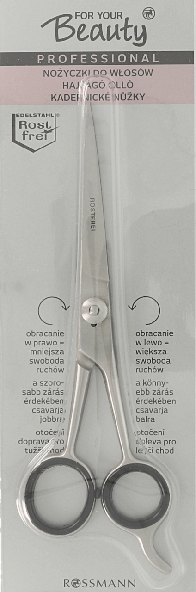
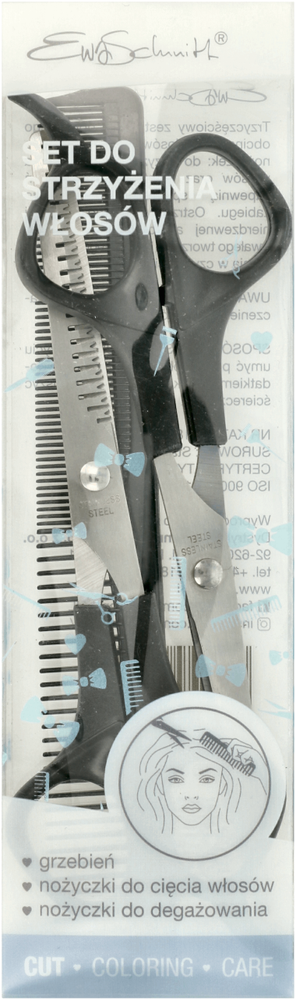
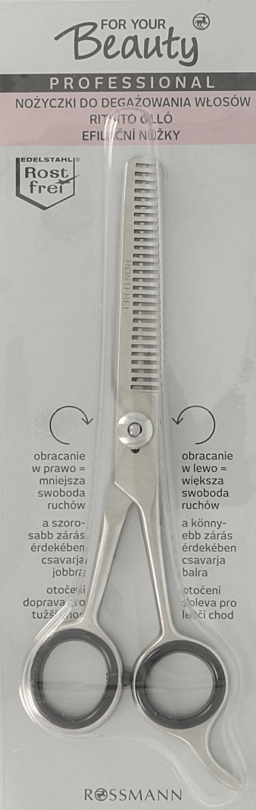

|
 FOR YOUR BEAUTY ProfessionalKoszt: 19.99zł BruttoObracanie w prawo = mniejsza swoboda ruchów. Obracanie w lewo = większa swoboda ruchów. Profesjonalne nożyczki do włosów z dokładnie wyszlifowanymi ostrzami gwarantują szczególną łatwość ruchów i niezawodność obsługi. Oczka nożyczek o różnej wielkości i wyposażone w gumowe nasadki oraz podpórka na palec umożliwiają wygodną pracę bez uczucia zmęczenia. Dzięki śrubie regulacyjnej można w łatwy sposób wyregulować nożyczki. W celu uzyskania mniejszej swobody ruchów obrócić śrubę w prawo, a w celu uzyskania większej swobody ruchów obrócić śrubę w lewo. |
 EWA SCHMITTKoszt: 24.49zł BruttoTrzyczęściowy zestaw do domowego obcinania włosów. Dwa rodzaje nożyczek: do strzyżenia i cieniowania włosów oraz prosty, gęsty grzebień zapewnią sprawność domowego zabiegu. Ostrze wykonano ze stali nierdzewnej a uchwyty z lekkiego, trwałego tworzywa PP, łatwego do utrzymania w czystości. |

FOR YOUR BEAUTY ProfessionalKoszt: 17.49zł BruttoObracanie w prawo = mniejsza swoboda ruchów. Obracanie w lewo = większa swoboda ruchów. Profesjonalne, jednostronnie ząbkowane degażówki nadają się idealnie do cieniowania gęstych włosów oraz do wykonywania przejść i postrzępionych fryzur. Oczka nożyczek o różnej wielkości i wyposażone w gumowe nasadki oraz podpórka na palec umożliwiają wygodną pracę bez uczucia zmęczenia. Dzięki śrubie regulacyjnej można w łatwy sposób wyregulować degażówki. W celu uzyskania mniejszej swobody ruchów obrócić śrubę w prawo, a w celu uzyskania większej swobody ruchów obrócić śrubę w lewo. |